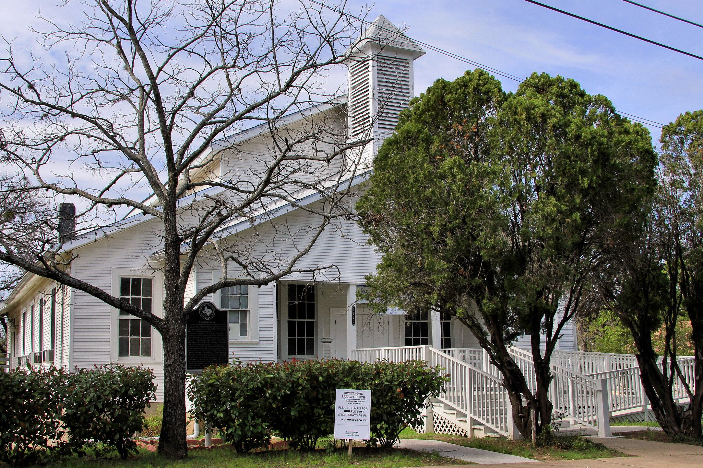

At its 155th Homecoming, a little white church on West 11th called its people home
The bell used to have work to do. It tolled for weddings. It tolled for deaths. It warned the neighborhood when a patient had slipped out of the nearby veterans hospital.
Now it sits out front of what the Austin Chronicle calls "the little white church," where anyone walking down West 11th Street can see it.
This is Sweet Home Missionary Baptist Church, 1725 W. 11th St., in Clarksville. In July, the Chronicle reported, the church marked 155 years. None of its regulars live in the neighborhood now. Every year, they come back.
"Sweet Home is the foundation, the hub," Ada Bolden told the Chronicle. "If we don't do anything else, we're gonna come home. We're gonna come to Sweet Home."
A neighborhood freedmen built
Clarksville began in 1871. That year Charles Clark, a freedman, bought two acres of land on what is now Tenth Street and divided it among other freedmen so they could build a community of their own outside Austin. Bolden told the Chronicle her family was the second family of freed slaves to settle there, in the 1870s.
The church followed close behind. Before there was money for land, the congregation met in the home of Mary Smith, in the house now known as the Haskell House. In 1882, members bought the land the church stands on today. Sweet Home quickly became the cornerstone of Clarksville, a closely knit village whose life centered on the church. Its first minister, the Rev. Jacob Fontaine, also started the Gold Dollar, Austin's first Black newspaper.
The building standing today went up in 1935. The congregation is older than its walls.
Everybody knew everybody
Timothy Higgins is a deacon. He started coming to Sweet Home in 1960, when he was 8. Today he drives in from East Austin for services. "If you weren't in the hospital, you were going to be at church," he told the Chronicle.
The Chronicle sketches the Clarksville of those years in a few strokes. Everybody knew everybody. Doors stayed unlocked. Sunday meant full pews and church all day. Summer meant Bible study with Mrs. Mays.
Hattie Harris is 77 and still sings in the choir. "The church was everything to the community," she told the Chronicle. "Especially for the children. We had nowhere else to go to play, to laugh, to have fun … there were areas we couldn't go in."
That last line carries the weight. A church can be a refuge because the city around it isn't.
Where the fight was organized
Sweet Home was also where the neighborhood organized. In 1968, residents protested the MoPac Expressway plan. They lost. The highway cut through the community. Twenty-six families were relocated, and another 23 left on their own. The Chronicle reports that the resistance gathered at Sweet Home.
The next fight went differently. In 1976, residents and their supporters defeated a plan for a thoroughfare through Clarksville that would have connected I-35 and MoPac. A year earlier, the Texas Historical Commission had named a strip of the neighborhood a historic district. In 1976, Clarksville was added to the National Register of Historic Places.
One loss. One win. Both planned in the same rooms.
Faces in the basement
Pictures of the church's prominent members line the basement walls, the Chronicle reports. Elias Mayes, one of the few Black legislators in Texas during Reconstruction, attended Sweet Home. "Uncle" Seymour Washington, whom the Chronicle calls the unlikely patriarch of Austin's country hippie scene in the Seventies, sang in the choir. Baseball all-star Don Baylor and his wife, Becky, led restoration efforts before he died in 2017.
The upkeep continues, and it's practical. Over the past two decades, the Chronicle reports, the building has gained new pews, air conditioning and an accessibility ramp, and the bell tower and baptismal pool have been renovated. The money came from donations and from selling a piece of the property.
Homecoming
The Rev. Steve Manning grew up in Lockhart and has preached at Sweet Home since 2008. When he started, about 50 regulars came on Sundays, according to the Chronicle. Now it's in the mid-thirties, and none of them still live in Clarksville. They come from all over the city.
Homecoming, the church's annual anniversary celebration, is when the most of them come back at once.
At the 155th Homecoming on July 19, the Chronicle reports, Manning preached on Matthew 7:24-25, the wise man who built his house upon a rock. It's hard to pick a better text for a congregation that has outlasted a highway. The afternoon guest preacher was the Rev. Joseph McCormick of Ebenezer Baptist on the Eastside, whom Manning had invited. "You've done your job of standing tall on the word of God," McCormick told the congregation.
After the services, people in matching blue aprons served soul food in the basement. Old neighbors caught up. A few children rode bikes outside.
"Come on Sweet Home," McCormick urged as he built his sermon to its peak, the Chronicle reported. "Don't quit now."
If you go
Worship is every Sunday at 11 a.m., and Bible study is on Wednesdays. Every year the church holds Peace Through Pie, a fundraiser celebrating Dr. Martin Luther King Jr.'s birthday. The Handbook notes a historical marker outside the church. The Texas Historical Commission's visitor listing asks one thing: "This is an active church, please be respectful of services."